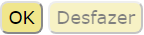
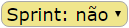

Interface
Aqui estão algumas breves explicações para jogar movimentos:
-
indicam pontuações e a disponibilidade do bônus de sprint para ambos os jogadores.
-
indica os créditos do jogador ativo.
- 
confirma ou cancela/desfaz a vez do jogador ativo.
- 
seleciona o bônus de sprint.
- Desmarque a futebolista / bola selecionado antes de escolher outra coisa.
Modos de jogo
Aqui são os modos de jogo:
- Ambos os jogadores estão lado a lado, e eles usam o mesmo browser.
- Ambos os jogadores são remotas. E cada um usa o seu próprio browser.
- Um jogador joga contra uma inteligência artificial (IA).
- Duas IA jogam uns contra as outras.
Apenas o modo ambos jogadores lado a lado
é implementado atualmente,
mesmo que o selector Humano / AI ...
é exibido ao lado do botão Novo Jogo
.
Regras
Alcançar-se as regras através do botão Regras
.
Portabilidade
BALTEK é jogado no browser, e é relativamente portátil.
No entanto, a ergonomia atual requer uma tela bastante grande e um rato.
A adaptação do BALTEK para o smartphone está prevista em outra fase.